back
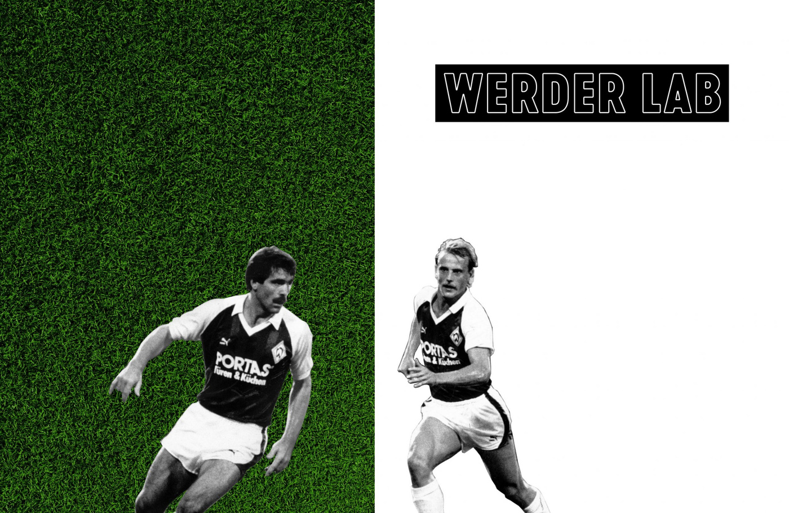
WERDER LAB: Global Sports-Tech Startup Challenge for Werder Bremen
Client: SV Werder Bremen × betahausX · Campaign Concept · Content Production · Performance Marketing · Event Management · BerlinWERDER LAB was a global startup challenge and a joint initiative of Werder Bremen and betahausX. The idea: rethink how a professional football club works – using technology to improve athlete performance, fan engagement and the processes behind the scenes.
I played a leading role in building the creative and marketing framework: I developed the campaign concept, managed content production and was responsible for the event management – from the first call for applications to the final pitch day.
Shaping the Innovation Challenge
WERDER LAB invited startups to pitch solutions for real club challenges such as talent prediction, injury prevention, digital content management and partner management. I defined how the challenge was presented to the public: creative direction, copy and design assets, a campaign website and a digital communication plan to reach innovators, entrepreneurs and tech creators worldwide.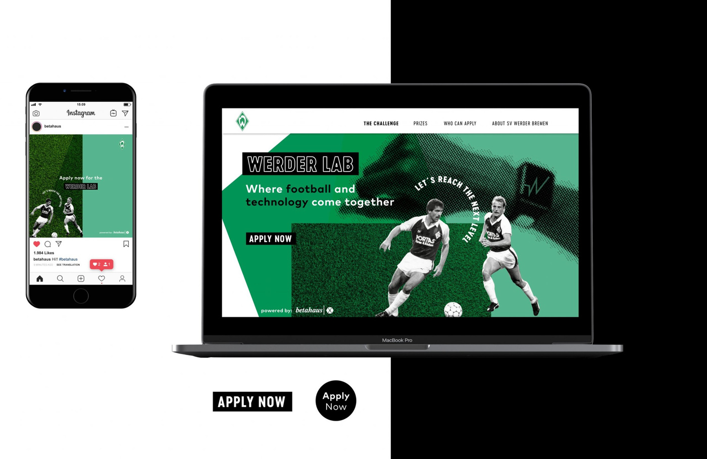
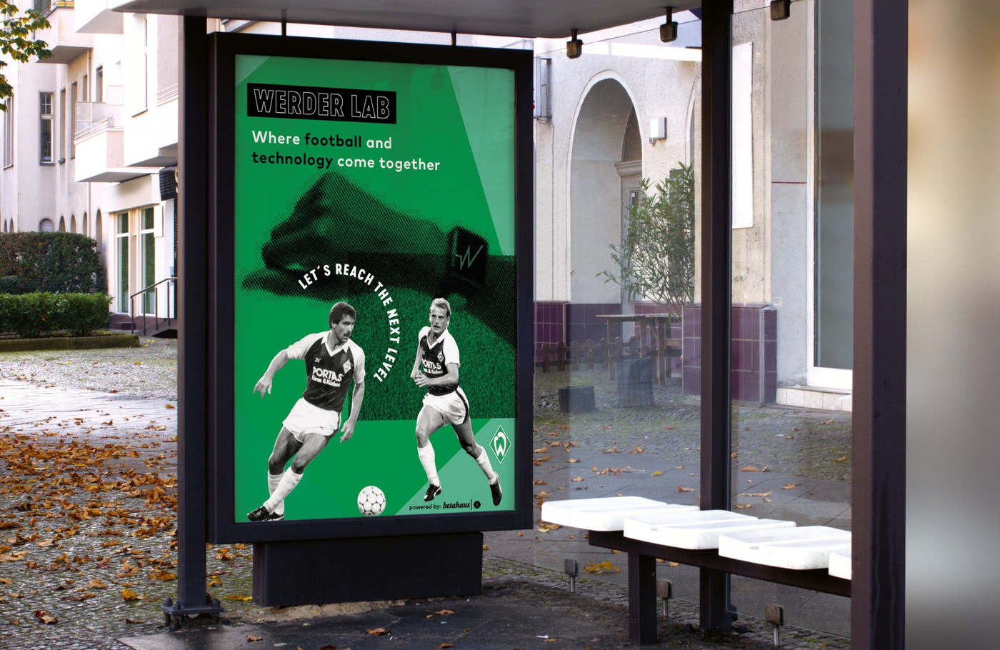
Performance Marketing & Global Outreach
To get the right startups on board, I managed performance marketing campaigns that combined paid social and targeted digital advertising with authentic storytelling about Werder Bremen’s vision for future-oriented football. The integrated approach attracted hundreds of applications from around the globe.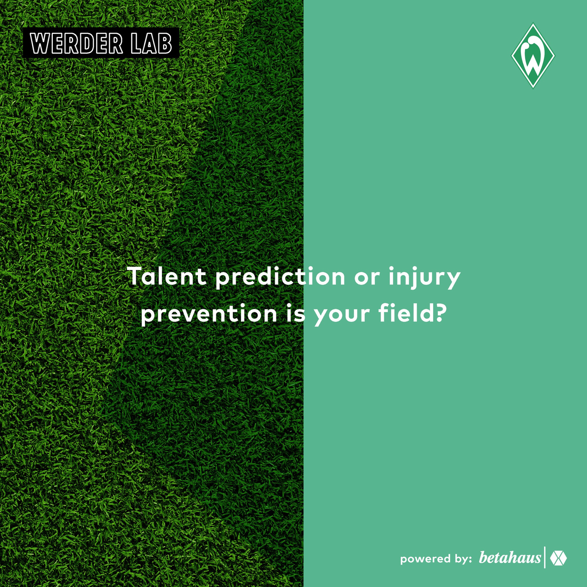
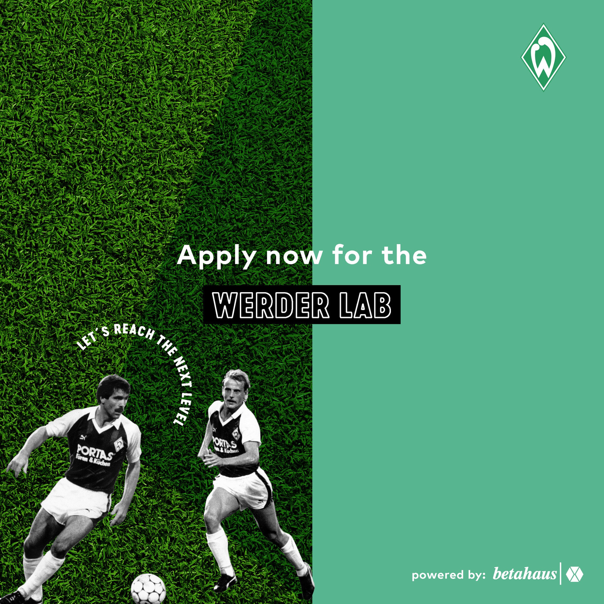
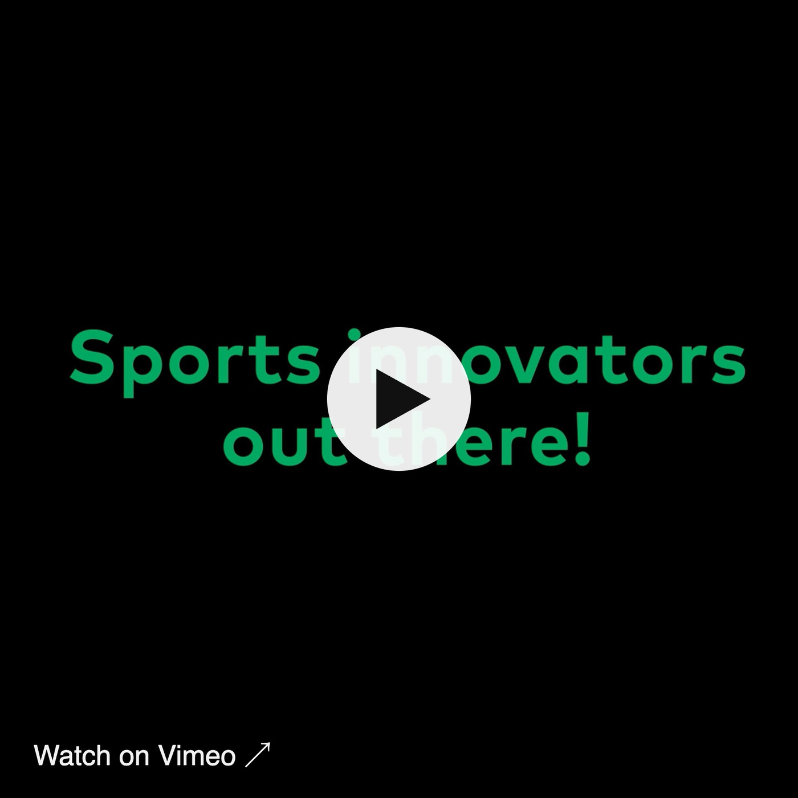
Event Management: Pitch Day in Berlin
The finalists were invited to Berlin to pitch their solutions to Werder Bremen and betahausX. I was responsible for the event management and made sure the campaign’s branding and messaging carried through every touchpoint – from digital channels to the stage, the screens and the final pitch day.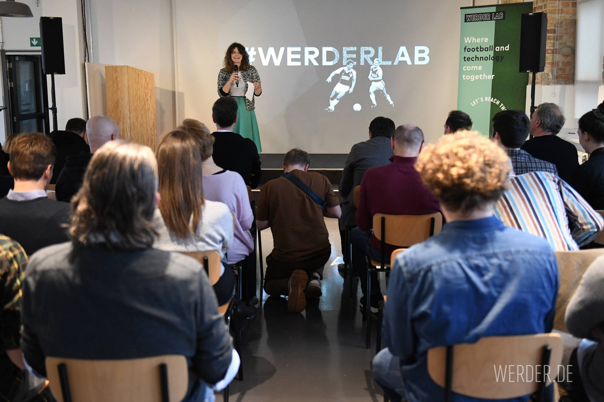
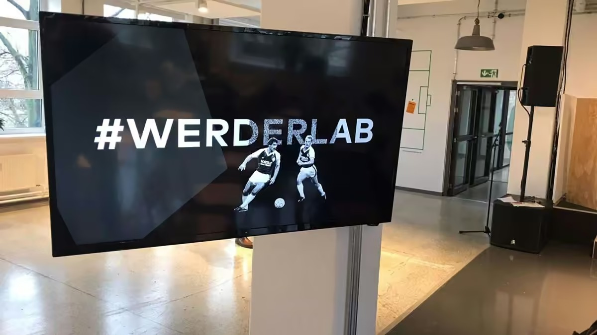
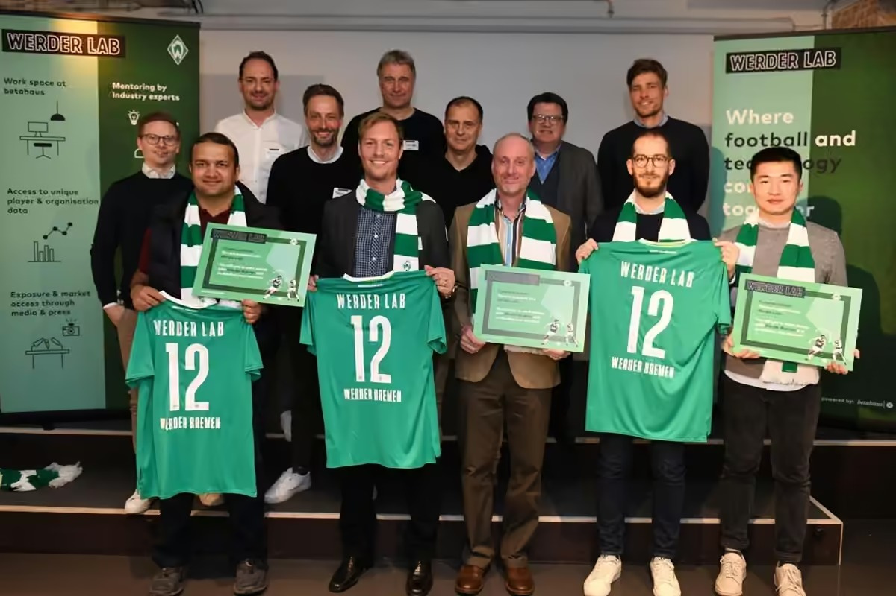
Incubation at betahausX
The selected startups joined a two-month incubation programme at betahausX: workspace, mentoring, access to real club data and direct collaboration with Werder Bremen’s management – a rare chance to pilot new solutions inside professional football.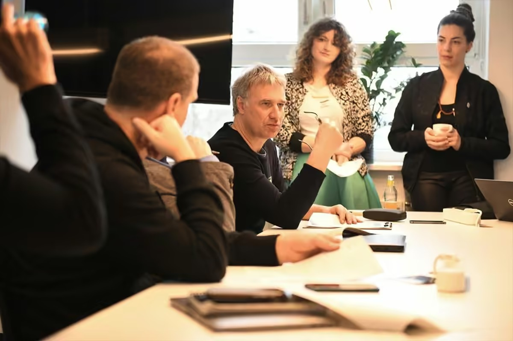
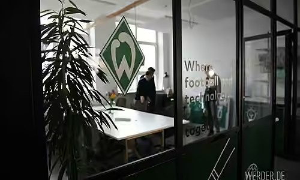
My Contributions
— Creative campaign concept and visual identity for WERDER LAB— Copywriting, marketing communication and content production
— Performance marketing and global outreach to attract startup applications
— Event management, event communication and public presentation of the challenge
WERDER LAB shows how structured marketing, creative storytelling and strategic communication can turn a corporate sports initiative into a global innovation story – bridging sport, technology and startup culture.
In collaboration with Patricia Doleschel and Fabian Spura.
Today I bring this experience to stakeholder & partner networks and event management at Table Studio, my community & experience studio in Berlin.
Next case: 42 Berlin & Wolfsburg →